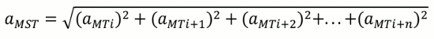
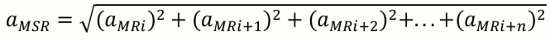
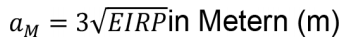
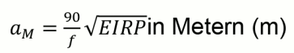

(1) Zu den Sendern, die mit Hochfrequenzenergien auf elektrische Zündanlagen einwirken können, gehören z. B.:
(2) Eine ungewollte Zündung durch Hochfrequenzsender ist grundsätzlich ausgeschlossen:
(3) Zu Absatz 2 Buchstabe a: bei Verwendung von Zündern der Klasse II bzw. Zündern der Klasse IV (U-Zünder bzw. HU-Zünder) und der Einhaltung eines Mindestabstandes von 1 m sind folgende Sender als ungefährlich anzusehen:
Wenn von den folgenden Geräten nur ein Gerät eingesetzt wird, ist dieses ebenfalls bei einem Mindestabstand von 1 m als ungefährlich einzustufen:
Sollten bei einer Bauwerkssprengung Sprechfunkgeräte und/oder Mobiltelefone räumlich verteilt im oder um das Bauwerk eingesetzt werden und die einzelnen Geräte überschreiten die Sendeleistung von 2 W nicht, sind diese bei einem Sicherheitsabstand von 2 m zu den Bestandteilen der Zündanlage als ungefährlich einzustufen.
Anmerkung: Diese Sonderregelung ergibt sich aus den Randbedingungen aus dem Technical Report, der diesem Anhang zugrunde liegt. In diesem Report sind bestimmte Geometrien für einen Zündkreis vorgegeben, die bei Bauwerkssprengungen nicht eingehalten werden können, aber aus sicherheitstechnischer Sicht auch nicht eingehalten werden müssen.
Sind in dem Bereich der Zündanlage bei einer Bauwerkssprengung mehrere Sender mit einer Einzelleistung von mehr als 2 W vorhanden, sind die Ausführungen zu mehreren Sendern (Abschnitt III Absatz 12) zu beachten.
Hinweis: Die Sendeleistung kann im Regelfall der technischen Beschreibung entnommen werden.
(4) Zu Absatz 2 Buchstabe b: sind Sender vorhanden, bei denen ein gefährlicher Einfluss auf Zündanlagen nicht ausgeschlossen werden kann, ist ein bestimmter Abstand aS zwischen der Sprenganlage und dem Sender oder den Sendern einzuhalten. Der Abstand der Sprenganlage aS zu einem Sender darf den Mindestabstand aM nicht unterschreiten. Die Berechnung des Mindestabstandes aM ist entsprechend Abschnitt III bzw. Abschnitt VII durchzuführen. Der Mindestabstand aM darf grundsätzlich 1 m nicht unterschreiten.
Auf eine Berechnung kann bei den zurzeit bekannten Sendern in der Bundesrepublik Deutschland verzichtet werden, wenn folgende Mindestabstände eingehalten sind:
Sollten die Betrachtungen nicht zu einer eindeutigen Aussage führen, so ist ein Sachverständiger für die Beeinflussung von elektrischen Zündern durch elektromagnetische Wellen einzuschalten.
(5) Die Ermittlung des Mindestabstandes aM kann in Abhängigkeit von der Art der verwendeten Zünder (Klasse II oder IV) mit Hilfe der Tabelle (siehe unten), mit Hilfe der Formel aus Abschnitt VI oder über die zulässige Feldstärke erfolgen.
(6) Bei der Ermittlung des Mindestabstandes aM werden folgende Annahmen zugrunde gelegt:
(7) Bei Sprengarbeiten unter Tage (z. B. Tunnelvortrieb) sind die Ausbreitungsverhältnisse der elektromagnetischen Wellen und die notwendigen Sicherheitsabstände durch Sachverständige für die Beeinflussung von elektrischen Zündern durch elektromagnetische Wellen zu ermitteln. Alternativ kann bei Sprengarbeiten in diesen Bereichen die Berechnung des Mindestabstandes aM über die zulässige Feldstärke erfolgen (siehe Abschnitt VIII).
(8) Bei Vorhandensein nur eines Senders wird die wirksame Strahlungsleistung EIRP des Senders bestimmt (siehe Abschnitt IV).
(9) Die Bestimmung des Mindestabstandes aM erfolgt mit der Tabelle (siehe unten). Wenn der ermittelte Mindestabstand aM kleiner ist als der Abstand des Senders aS zu der Sprenganlage, sind keine weiteren Schritte erforderlich.
(10) Die Bestimmung des Mindestabstandes aM erfolgt mit der Berechnungsformel aus Abschnitt VI. Wenn der ermittelte Mindestabstand aM kleiner ist als der Abstand des Senders aS zu der Sprenganlage, sind keine weiteren Schritte erforderlich.
(11) Es ist die Einschaltung eines Sachverständigen für die Beeinflussung von elektrischen Zündern durch elektromagnetische Wellen erforderlich.
(12) Bei Vorhandensein mehrerer Sender werden alle betroffenen Sender erfasst. Sind mehrere gleichstarke Sender (Sender mit Leistungen größer 50 W) vorhanden, bei denen ein gefährlicher Einfluss auf die Zündanlage bzw. Zündanlagen nicht ausgeschlossen werden kann, ist der Mindestabstand dieser Sender zu der Zündanlage auf folgende Weise zu bestimmen:
(13) Es wird die wirksame Strahlungsleistung EIRP jedes einzelnen Senders bestimmt (siehe Abschnitt IV).
(14) Die Bestimmung des Mindestabstandes aM jedes einzelnen Senders erfolgt mit der Tabelle (siehe Abschnitt V). Die Bestimmung des Gesamtmindestabstandes aM erfolgt mit Hilfe der nachfolgenden Formel:

MST" />Wenn der so ermittelte Mindestabstand aM kleiner ist als jeder Abstand aS zu den einzelnen Sendern, sind keine weiteren Schritte erforderlich.
(15) Die Bestimmung des Mindestabstandes aM jedes Senders erfolgt mit der Berechnungsformel aus Abschnitt VI.
Die Bestimmung des Gesamtmindestabstandes aMSR erfolgt dann mit Hilfe der nachfolgenden Formel:

MSR" />Wenn der so ermittelte Mindestabstand aMSR kleiner ist als jeder Abstand zu den einzelnen Sendern aS sind keine weiteren Schritte erforderlich.
(16) Es ist ein Sachverständiger für die Beeinflussung von elektrischen Zündern durch elektromagnetische Wellen einzuschalten.
(17) Bei der Beurteilung der Einwirkung von Hochfrequenzsendern auf elektrische Zündanlagen muss grundsätzlich die wirksame Strahlungsleistung EIRP zu Grunde gelegt werden. Diese errechnet sich aus der Senderausgangsleistung P multipliziert mit dem Antennengewinnfaktor G.
(18) Die Berechnung der wirksamen Strahlungsleistung EIRP ist abhängig von den Sendern, d. h. ob ortsfeste Antennenanlagen oder batteriebetriebene Sendeanlagen bzw. portable Sender vorliegen.
(19) Bei ortsfesten Antennenanlagen oder Sendern errechnet sich die wirksame Strahlungsleistung EIRP aus der Senderausgangsleistung P multipliziert mit dem Antennengewinnfaktor G. Der Antennengewinnfaktor ist abhängig von der Art des Senders, der Form und Ausführung der Sendeantenne und errechnet sich aus dem Antennengewinn g.
| EIRP | = P x G in Watt (W) |
| P | = Ausgangsleistung in Watt (W) |
| G | = Antennengewinnfaktor, 100,1g |
| g | = Antennengewinn in Dezibel (dB) |
Beispiel Amateurfunksender:
| Frequenz | f = 28 MHz |
| Ausgangsleistung | P = 750 Watt |
| Antennengewinn | g = 3 dB |
| Antennengewinnfaktor | G = 2 |
| Wirksame Strahlungsleistung | EIRP = 1 500 W |
(20) Bei mobilen Funkanlagen errechnet sich die wirksame Strahlungsleistung EIRP aus der Senderausgangsleistung P multipliziert mit dem Antennengewinnfaktor G. Der Antennengewinnfaktor ist abhängig von der Art des Senders, der Form und Ausführung der Sendeantenne und errechnet sich aus dem Antennengewinn g.
| EIRP | P × G in Watt (W) |
| P | = Ausgangsleistung in Watt (W) |
| G | = Antennengewinnfaktor, 100,1g |
| g | = Antennengewinn in Dezibel (dB) |
Beispiel LKW-Funkstation:
| Frequenz | f = 568 MHz |
| Ausgangsleistung | P = 6 Watt |
| Antennengewinn | g = 4 dB |
| Antennengewinnfaktor | G = 2,5 |
| Wirksame Strahlungsleistung | EIRP = 15 W |
(21) Bei tragbaren Sendeanlagen wie batteriebetriebene handgeführte Sendegeräte (z. B. Sprechfunkgeräte, GSM-Portables) kann die wirksame Strahlungsleistung EIRP in der Regel gleich der Ausgangsleistung P gesetzt werden. Im Zweifelsfall sollten die Daten des Senders beim Hersteller erfragt werden.
EIRP ≈ P
Beispiel Hand-Sprechfunkgeräte:
| Frequenz | f = 140 MHz |
| Ausgangsleistung | P = 4 W |
| Antennengewinn | g = 0 |
| Antennengewinnfaktor | G = 1 |
| Wirksame Strahlungsleistung | EIRP = 4 W |
(22) Aus der nachfolgenden Tabelle kann der Mindestabstand aM in m in Abhängigkeit von der wirksamen Strahlungsleistung EIRP und der Sendefrequenz f ermittelt werden.
Tabelle mit Mindestabstand in Meter in Abhängigkeit von wirksamer Strahlungsleistung EIRP und Sendefrequenz f
| f | > 0,1 – 1,5 MHz | > 1,5 – 10 MHz | > 10 – 30 MHz | > 30 – 100 MHz | > 100 – 500 MHz | > 500 – 1 000 MHz | > 1,0 GHz | |
|---|---|---|---|---|---|---|---|---|
| EIRP | ||||||||
| > 0,1 W bis 0,5 W | 2 | 2 | 3 | 2 | 1 | 1 | 1 | |
| > 0,5 W bis 1 W | 3 | 3 | 4 | 3 | 1 | 1 | 1 | |
| > 1 W bis 5 W | 6 | 3 | 8 | 5 | 2 | 1 | 1 | |
| > 5 W bis 20 W | 15 | 6 | 15 | 10 | 4 | 1 | 1 | |
| > 20 W bis 100 W | 30 | 15 | 35 | 25 | 8 | 2 | 1 | |
| > 100 W bis 1 kW | 85 | 40 | 100 | 70 | 30 | 6 | 3 | |
| > 1 kW bis 10 kW | 270 | 120 | 330 | 210 | 80 | 20 | 10 | |
| > 10 kW bis 100 kW | 850 | 400 | 1 000 | 660 | 260 | 60 | 30 | |
| > 100 kW bis 400 kW | 1 700 | 750 | 2 000 | 1 320 | 510 | 120 | 60 | |
| > 400 kW bis 1 MW | 2 600 | 1 200 | 3 200 | 2 100 | 800 | 180 | 95 | |
| > 1 MW bis 3 MW | 4 500 | 2 000 | 5 500 | 3 610 | 1 400 | 310 | 160 | |
Beispiel: Strahlungsleistung EIRP = 500 kW, Sendefrequenz f = 20 MHz.
Daraus ergibt sich ein Mindestabstand aM = 3 200 m aus der Tabelle.
(23) Hat der Sender eine Sendefrequenz von bis zu 30 MHz, kann der Mindestabstand wie folgt berechnet werden:

M" />EIRP = Strahlungsleistung in Watt (W)
Beispiel: Strahlungsleistung EIRP = 500 kW.
Daraus ergibt sich ein Mindestabstand aM = 2 121 m.
Ist der errechnete Wert geringer als der Tabellenwert, so kann der geringere Wert als Mindestabstand verwendet werden.
(24) Hat der Sender eine Sendefrequenz von mehr als 30 MHz, kann der Mindestabstand wie folgt berechnet werden:

M" />EIRP = Strahlungsleistung in Watt (W)
f = Frequenz in MHz
Beispiel: Strahlungsleistung EIRP = 500 kW, Sendefrequenz f = 45 MHz.
Daraus ergibt sich ein Mindestabstand aM = 1 414 m.
Ist der errechnete Wert geringer als der Tabellenwert, so kann der geringere Wert als Mindestabstand verwendet werden.
(25) Der Mindestabstand für Zünder der Klasse IV kann durch die Multiplikation von aM für Zünder der Klasse II mit 0,33 ermittelt werden.
aM(IV) = 0,33 • aM(II)
(26) Sollte die Ermittlung des Sicherheitsabstandes auf elektrische Zündanlagen wegen fehlender oder unsicherer Daten oder aufgrund der Einwirkung von mehreren Hochfrequenzsendern nicht möglich oder schwierig sein, so muss alternativ die Ermittlung des Sicherheitsabstandes über die zünderabhängige zulässige Feldstärke erfolgen.
(27) Bei Sprengarbeiten unter Tage (z. B. Tunnelvortrieb) sind die Ausbreitungsverhältnisse der elektromagnetischen Felder zu berücksichtigen und mit diesem Wissen sind dann die angepassten Sicherheitsabstände durch einen Sachverständigen für die Beeinflussung von elektrischen Zündern durch elektromagnetische Wellen zu bestimmen. Alternativ kann bei Sprengarbeiten unter Tage die Berechnung des Mindestabstandes aM über die zulässige Feldstärke erfolgen.
(28) Die ermittelte elektrische Feldstärke darf in keinem Fall den Wert von 2 V/m bei Zündern der Klasse II und von 5 V/m bei Zündern der Klasse IV überschreiten.
(29) Die Feldstärke kann im Rahmen einer breitbandigen Messung der elektrischen Feldstärke im Bereich der Zündanlage oder durch eine andere geeignete Abschätzung bestimmt werden. Wird bei dieser breitbandigen Messung oder bei der durchgeführten Abschätzung die für die Sprengzünder zulässige Feldstärke überschritten, muss eine frequenzabhängige Messung durchgeführt werden.
(30) Für die frequenzabhängige Messung und die Bewertung der Messergebnisse ist ein Sachverständiger für die Beeinflussung von elektrischen Zündern durch elektromagnetische Wellen einzuschalten. Bei vergleichbaren Randbedingungen kann auf ein exemplarisches Gutachten Bezug genommen werden.
(31) Bei der Verwendung von elektronischen Zündern sind die für Zünder der Klasse IV erforderlichen Mindestabstände einzuhalten, sofern vom Hersteller keine anderen Angaben zur zulässigen Feldstärke gemacht werden.